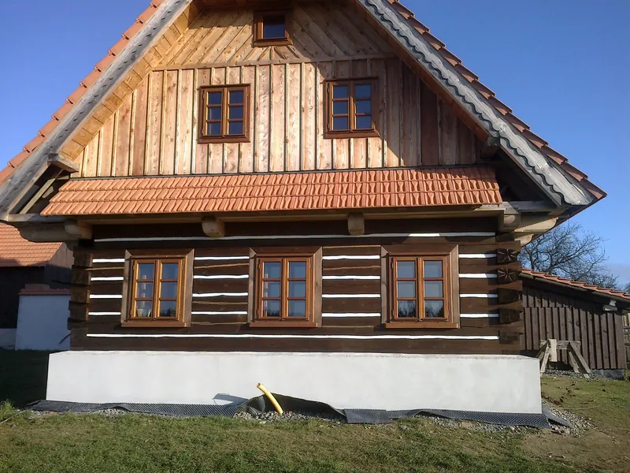
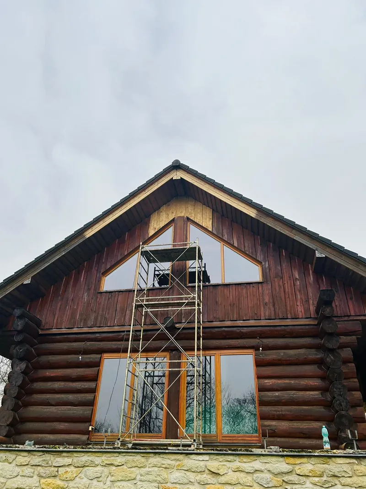
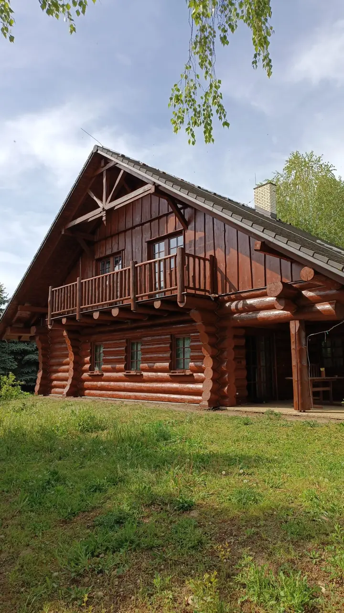
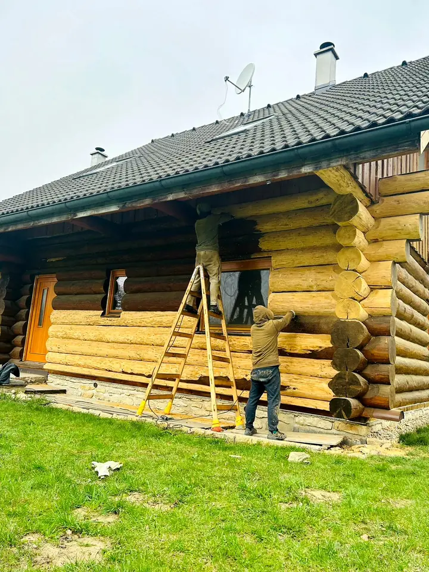
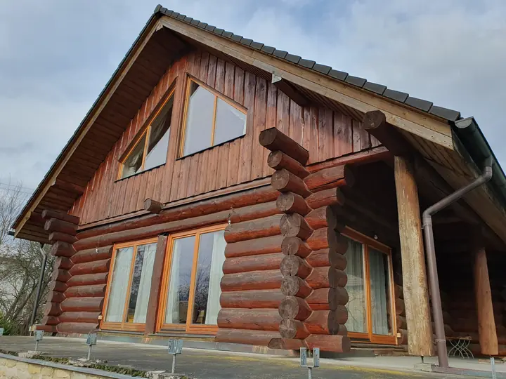
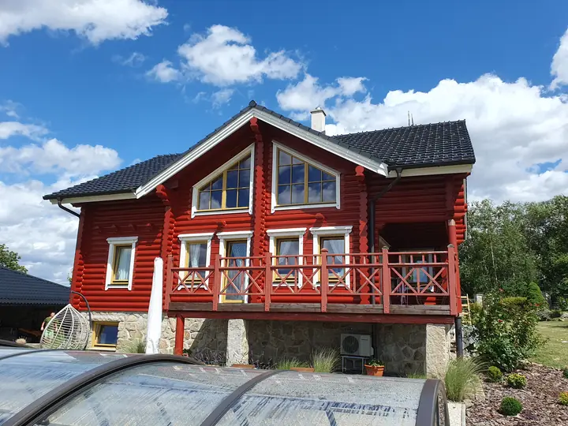
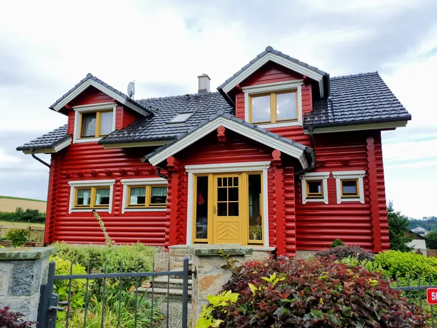
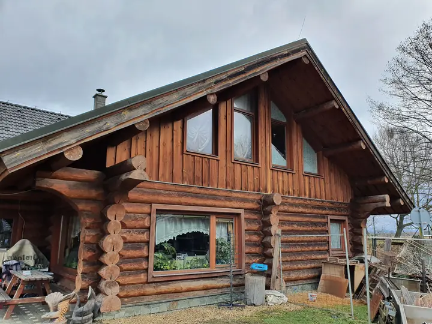
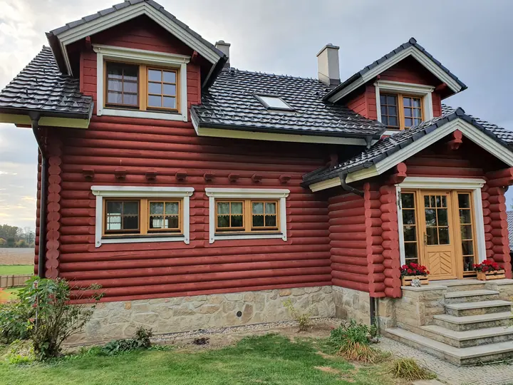
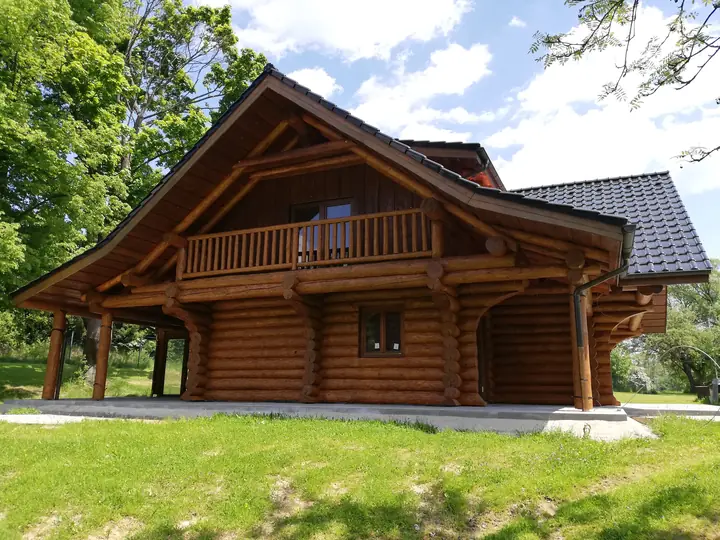

Ocenění
Natřeli jsme Dřevostavbu roku 2013
Vítězem soutěže Dřevostavba roku 2013, kterou pořádá časopis sruby & roubenky, se stal srub Tereza od firmy HANIŠ – Srubové domy. Jeho nátěr je naše práce.
Pavel Ehl · malířské a natěračské práce od roku 1990
Vrátíme dřevu krásu a ochráníme ho na další roky. Brousíme ručně, natíráme štětcem a nátěrový systém volíme podle konkrétního domu – po celé České republice.
Služby
Specializujeme se na sruby, roubenky a masivní dřevostavby – od renovace zašedlého dřeva po finální nátěr interiéru.
Zašedlé, popraskané nebo loupající se dřevo ručně přebrousíme až na zdravý povrch. Odstraníme starý nátěr i zašednutí a dřevo připravíme na nový nátěr.
Lazury, oleje i krycí barvy volíme podle druhu dřeva, orientace domu, přesahu střechy a nadmořské výšky. Nanášíme štětcem, aby nátěr dobře zakotvil.
Přírodní nátěry Kreidezeit ze směsi olejů a včelího vosku. Dřevo působí přirozeně, nepotlačí se jeho kresba ani barva a povrch se snadno udržuje.
Utěsníme spáry a praskliny mezi kládami pružným tmelem (Woodchink), aby do konstrukce nezatékalo a dům zůstal dlouho v dobré kondici.
Na jižní a jihozápadní straně vydrží kvalitní venkovní nátěr zhruba čtyři roky, přírodní olejové nátěry asi polovinu této doby. Nejlepší je přetřít dům ve chvíli, kdy ještě vypadá pěkně – při delším odkladu dřevo černá a renovace je náročnější i dražší.
Jak pracujeme
Každý dům je jiný. Proto nejdřív posoudíme stav dřeva a teprve pak navrhneme postup i materiál.
Přijedeme, posoudíme dřevo, starý nátěr i okolí domu a navrhneme vhodný nátěrový systém. Dostanete přesný rozpočet.
 2
2
Starý nátěr a zašedlou vrstvu odstraníme ručním broušením. Na rozdíl od tryskání lze lépe opracovat i nerovnosti trámů.

3Utěsníme praskliny a spáry, ošetříme poškozená místa a čela kulatin, aby nový nátěr měl pevný základ.
Nátěr nanášíme ručně štětcem ve více vrstvách. Barva se lépe vetře do dřeva a přilne mnohem lépe než při pouhém nástřiku.

Před Po přebroušení
Po přebroušeníReference
Výběr z posledních let. Kliknutím na fotku otevřete celou sérii.
 2 fotky
2 fotky

4 fotky 2 fotky
2 fotky

5 fotek
4 fotky
1 fotka
1 fotka 2 fotky
2 fotky
 1 fotka
1 fotka

1 fotka
2 fotky 3 fotky
3 fotky
 2 fotky
2 fotky

2 fotkyNapsali o nás
Na odborných článcích o nátěrech a údržbě dřevostaveb se Pavel Ehl podílel s časopisem sruby & roubenky a portálem drevoastavby.cz.
Ocenění
Vítězem soutěže Dřevostavba roku 2013, kterou pořádá časopis sruby & roubenky, se stal srub Tereza od firmy HANIŠ – Srubové domy. Jeho nátěr je naše práce.
časopis sruby & ROUBENKY 1/2024
drevoastavby.cz
Nový srub pro krátkodobý pronájem v chorvatském Brodu na Kupi – tentokrát ne o stavbě samotné, ale o jejím povrchovém ošetření.
drevoastavby.cz
Přírodní dřevo na každém kroku je důvod, proč si lidé vybírají dům z masivu. I dřevěné stěny v interiéru ale můžeme nátěrem doladit.
drevoastavby.cz
drevoastavby.cz
Co dělat, když nátěr nebyl kvalitní nebo dům nebyl dlouho udržovaný? První rada zní: experimentování na vlastní pěst se nevyplácí.
drevoastavby.cz
drevoastavby.cz
rozhovor, časopis sruby & roubenky
Jak se z mladého člověka stane natěrač-profesionál, proč brousit a natírat ručně a jak dlouho nátěry vydrží.
časopis sruby & roubenky 2/2014
Kdo odpovídá za vady nátěru – dodavatel barvy, nebo firma, která ji nanesla? A podle čeho vybrat nátěrový systém?
O nás
Firma Ehl nabízí malířské a natěračské práce od roku 1990. Začínali jsme nátěry ocelových konstrukcí, malbami interiérů a fasádami. Od roku 2000 se věnujeme dřevostavbám a nátěry srubů a roubenek se staly naší specialitou.
Jezdíme po celé republice – od Krušných hor po Beskydy. Pro konkrétní zakázku vám rádi připravíme přesný rozpočet.
„My všechno brousíme i natíráme ručně. Vetřením štětcem do povrchu dřeva se barva lépe ukotví a přilne než při pouhém nástřiku.“
Kontakt
Zavolejte nebo napište. Rozpočet připravíme rychleji, když v e-mailu uvedete:
Pavel Ehl
+420 777 149 562 natrito@seznam.cz Domašín 95IČO: 10501916 · podnikatel zapsaný v živnostenském rejstříku